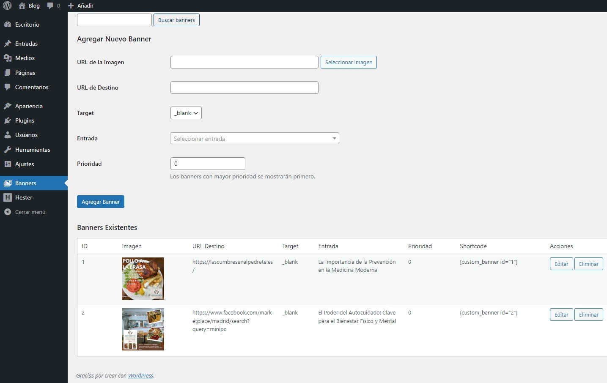

Banners de publicidad dinamicos - Plugin WordPress

Banners dinamicos versión 1.0
Es plugin gestiona la publicación de banners publicitarios con imágenes y URLs, asociados a entradas.
La vista diseño es adaptable a dispositivos móviles.
$ 5.90 Dólares

INSTRUCCIONES:
Una ver realizado el pago le llegara la descarga automáticamente por google Drive y las instrucciones de la instalación es muy sencilla, deberá entrar en su plataforma de WordPress modo administrador y en la sección de Plugins y administrador de Plugins, le dará al botón AÑADIR NUEVO PLUGIN, luego SUBIR PLIGIN, he insertaras el plugin comprado y automáticamente, una vez instalado le tendrá que dar a ACTIVAR para que dicho plugin empiece a funcionar.
Descripción
Custom Banner Manager es un plugin de WordPress que te permite gestionar y mostrar banners publicitarios de forma dinámica en tu sitio web. Podrás asociar banners específicos a entradas individuales o utilizar banners generales en todo tu sitio.
Características
- Gestión intuitiva de banners desde el panel de administración
- Asociación de banners a entradas específicas
- Sistema de prioridad para controlar qué banners se muestran primero
- Shortcode para insertar banners en cualquier lugar
- Widget incorporado para mostrar banners en sidebars
- Soporte para enlaces que se abren en la misma ventana o en una nueva
- Buscador de banners para facilitar la gestión
- Interfaz de selección de imágenes integrada con la biblioteca de medios de WordPress
Nota: Si tuviera algún problema con la instalación, le brindamos el soporte gratuito. Contacte con nosotros para cualquier duda y estaremos encantados de ayudarle. Email: chrishb2000@gmail.com
Más imagenes
Ver video como se realiza la instalación